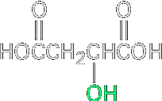
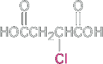
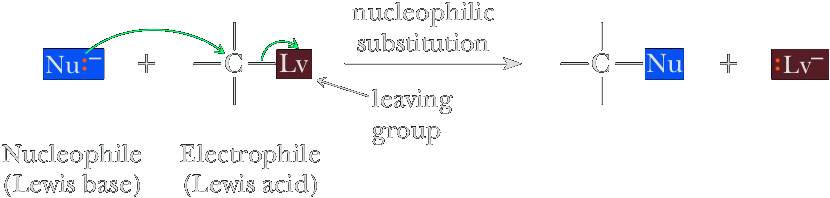
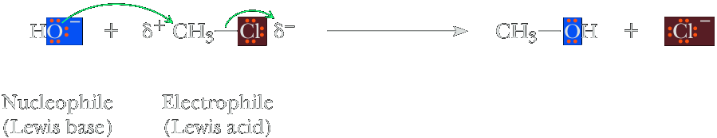
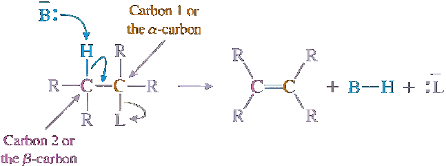
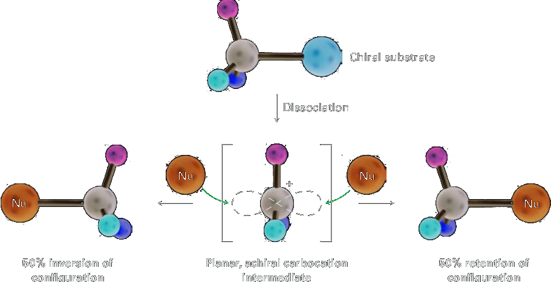
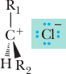

Nucleophilic substitutions
The discovery of the nucleophilic substitution reaction of alkyl halides dates back to work carried out in 1896 by the German chemist Paul Walden. Walden found that the pure enantiomeric (+)- and (−)-malic acids could be inter converted through a series of simple substitution reactions. When Walden treated (−)-malic acid with PCl5, he isolated (+)-chlorosuccinic acid. This, on treatment with wet Ag2O, gave (+)-malic acid. Similarly, reaction of (+)-malic acid with PCl5 gave (−)-chlorosuccinic acid, which was converted into (−)-malic acid when treated with wet Ag2O. The full cycle of reactions is as follows
|  (−)-Malic acid [α]D = −2.3 | PCl5 ⟶ Ether |  (+)-Chlorosuccinic acid |
| ↑ | ↓ | |
(−)-Chlorosuccinic acid | PCl5 ⟵ Ether | (−)-Malic acid [α]D = +2.3 |
At the time, the results were astonishing. The eminent chemist Emil Fischer called Walden’s discovery “the most remarkable observation made in the field of optical activity since the fundamental observations of Pasteur.” Because (−)-malic acid was converted into (+)-malic acid, some reactions in the cycle must have occurred with a change, or inversion, in configuration at the chirality center. But which ones, and how? (Remember from Section 5.5 that the direction of light rotation and the configuration of a chirality center aren’t directly related. You can’t tell by looking at the sign of rotation whether a change in configuration has occurred during a reaction.) Today, we refer to the transformations taking place in Walden’s cycle as nucleophilic substitution reactions because each step involves the substitution of one nucleophile (chloride ion, Cl−, or hydroxide ion, HO−) by another. Nucleophilic substitution reactions are one of the most common and versatile reaction types in organic chemistry.
Nucleophilic substitution refers to any reaction in which an electron-rich nucleophile (meaning “nucleus loving”) (Nu:) replaces a leaving group (Lv). Viewed in the context of the mechanism elements first described in Section 6.2F, nucleophilic substitution is a combination of making a new bond between a nucleophile and an electrophile, and breaking a bond so that relatively stable mol ecules or ions are created. All nucleophiles are electron sources and can also be considered as Lewis bases (Section 4.7). As first discussed in Chapter 6, with the exception of radical reactions (Chapter 8), essentially every reaction you will study involves a reaction of a Lewis acid (that can also be considered as a good electron sink) with a Lewis base. In these reactions, the Lewis base, which is electron rich, reacts with the Lewis acid, which is electron poor. The Lewis acid is called an electrophile (meaning “electron loving”). The leaving group (Lv) can be a halide (X) or other electronegative group that can form a stable anion or other stable species. It should be noted that not all nucleophiles and leaving groups covered in this chapter are negatively charged. Further, not all nucleophiles react with all electrophiles; recognizing which do and which do not is part of what you should take from this chapter. Here is a general equation for a nucleophilic substitution reaction.
An example of this reaction that you have already studied is the alkylation of terminal alkynes. Another is the reaction of hydroxide ion with chloromethane. In this reaction, chloromethane is the electrophile. Because of the electronegativity of chlorine, there is a partial positive charge on the carbon.
Nucleophiles are also Brønsted bases, although some are very weak ones. The stronger ones can remove protons as well as attack at carbon centers. A reaction in which a halide and a hydrogen on the neighboring (β) carbon are removed is called a β-elimination. Nucleophilic substitution and base-promoted β-elimination are therefore competing reactions. For example, ethoxide ion reacts with bromocyclohexane as a nucleophile to give ethoxycyclohexane (cyclohexyl ethyl ether) and as a Brønsted base to give cyclohexene and ethanol.
In this chapter, we study substitution and β-elimination. By using these reactions, we can convert haloalkanes to compounds with other functional groups including alcohols, ethers, thiols, sulfi des, amines, nitriles, alkenes, and alkynes. Nucleophilic substitution and β-elimination open entirely new areas of organic chemistry and are a major method of interconverting functional groups. One of the most challenging aspects of the study of these reactions is deciding whether substitution or elimination is likely to prevail, and this will be the major focus of the last part of the chapter.
SN2 Mechanism
At one extreme, bond breaking and bond forming occur simultaneously. Thus departure of the leaving group is assisted by the incoming nucleophile. This mechanism is designated SN2, where S stands for Substitution, N for Nucleophilic, and 2 for a bimolecular reaction. This type of substitution reaction is classified as bimolecular because both the haloalkane and the nucleophile are involved in the ratedetermining step.
Mechanism
Make a new bond between a nucleophile and an electrophile and simultaneously break a bond to give stable molecules or ions. The nucleophile attacks the reactive center from the side opposite the leaving group; that is, an SN2 reaction involves backside attack of the nucleophile. In this diagram, the dashed lines in the transition state represent partially formed or broken bonds.
As noted in the mechanism just given, the nucleophile attacks from the backside. Backside attack by the nucleophile is facilitated in two ways. First, because of the polarization of the C−Br bond, the carbon atom has a partial positive charge and therefore attracts the electron-rich nucleophile (as shown for methyl chloride at the beginning of the chapter). Second, the electron density of the nucleophile entering from the backside assists in breaking the C−Br bond, thereby helping the bromide leave. The electron density of the nucleophile attacking from the backside can be thought of as populating the antibonding molecular orbital of the C−Br bond, weakening the C−Br bond as the new C−O s bond becomes stronger. This anti-bonding C−Br orbital has most of its character on the backside of the C. Therefore, upon collision with a nucleophile, the most effective way to fill this orbital is by collision from the backside of the carbon, which breaks the C−Br bond on the other side of the carbon. Other reaction geometries are higher in energy because they do not produce an effi cient orbital overlap that leads to weakening of the C−Lv bond. Backside attack has important stereochemical consequences, as we will see in Section 9.3A.
Figure 9.1 shows an energy diagram for an SN2 reaction. Because there is a single step in the SN2 mechanism, the energy diagram has one energy barrier that corresponds to a single transition state. Recall that transition states are fl eeting structures with essentially no lifetime. They are not intermediates but instead represent transitions between two structures that lie in wells (troughs) on energy surfaces such as Figure 9.1. The collision between the nucleophile and the electrophile must occur with enough energy to surmount the barrier to the reaction. This energy barrier is present because of the distortion from optimal bonding arrangements that occurs at the transition state. At the transition state of an SN2 reaction the C is distorted into a trigonal bipyramidal geometry with one bond partially forming and one bond partially breaking. Hence, the transition state structure is considerably strained relative to the reactant and product and is a hybrid structure that is transitioning between the reactant and product. A good way to think about this is that the transition state has higher internal energy due to the structural distortions caused by the collision−like the strain that takes place when two rubber balls collide, deform, and then bounce off one another. The difference is that in chemistry, the collisions can occur with suffi cient energy to cause bond breaking and forming, leading to a new structure.

As noted in the mechanism just given, the nucleophile attacks from the backside. Backside attack by the nucleophile is facilitated in two ways. First, because of the polarization of the C−Br bond, the carbon atom has a partial positive charge and therefore attracts the electron-rich nucleophile (as shown for methyl chloride at the beginning of the chapter). Second, the electron density of the nucleophile entering from the backside assists in breaking the C−Br bond, thereby helping the bromide leave. The electron density of the nucleophile attacking from the backside can be thought of as populating the antibonding molecular orbital of the C−Br bond, weakening the C−Br bond as the new C−O s bond becomes stronger. This anti-bonding C−Br orbital has most of its character on the backside of the C. Therefore, upon collision with a nucleophile, the most effective way to fill this orbital is by collision from the backside of the carbon, which breaks the C−Br bond on the other side of the carbon. Other reaction geometries are higher in energy because they do not produce an effi cient orbital overlap that leads to weakening of the C−Lv bond. Backside attack has important stereochemical consequences, as we will see in Section 9.3A.
Figure 9.1 shows an energy diagram for an SN2 reaction. Because there is a single step in the SN2 mechanism, the energy diagram has one energy barrier that corresponds to a single transition state. Recall that transition states are fleeting structures with essentially no lifetime. They are not intermediates but instead represent transitions between two structures that lie in wells (troughs) on energy surfaces such as Figure 9.1. The collision between the nucleophile and the electrophile must occur with enough energy to surmount the barrier to the reaction. This energy barrier is present because of the distortion from optimal bonding arrangements that occurs at the transition state. At the transition state of an SN2 reaction the C is distorted into a trigonal bipyramidal geometry with one bond partially forming and one bond partially breaking. Hence, the transition state structure is considerably strained relative to the reactant and product and is a hybrid structure that is transitioning between the reactant and product. A good way to think about this is that the transition state has higher internal energy due to the structural distortions caused by the collision−like the strain that takes place when two rubber balls collide, deform, and then bounce off one another. The difference is that in chemistry, the collisions can occur with suffi cient energy to cause bond breaking and forming, leading to a new structure.
SN1
The other limiting mechanism is called the SN1 reaction. In this mechanism, bond breaking between carbon and the leaving group is entirely completed before bond forming with the nucleophile begins. In the designation SN1, 1 stands for unimolecular reaction: A reaction in which only one species is involved in the ratedetermining step. This type of substitution is classified as unimolecular because only the haloalkane is involved in the rate-determining step. An SN1 mechanism is illustrated by the solvolysis of 2-bromo-2-methylpropane (tert-butyl bromide) in methanol to form 2-methoxy-2-methylpropane (tert-butyl methyl ether) and HBr. In this reaction, the nucleophile (methanol) is also the solvent, hence the name solvolysis.
In an SN1 reaction, the rate-determining step is the cleavage of the C−Lv bond to form a carbocation intermediate, shown as the structure in the second well of Figure 9.2. As we presented in Chapter 6, carbocations are two electrons shy of an octet and quickly react with nucleophiles, such as the solvent methanol. In the example of Figure 9.2, after reaction of the carbocation with methanol, the structure created has a proton on oxygen. A transition state exists on the energy diagram for each individual step. The last step in this three-step mechanism is a proton-transfer reaction following the SN1 reaction. As discussed, the rate-determining step of an SN1 reaction involves unimolecular cleavage of the haloalkane to a carbocation and a halide anion. One can envision this occurring due to collisions with the solvent. Recall that the reactant is dissolved in a solvent, and that there is continual thermal motion consisting of translation and tumbling of both the reactant and solvent molecules. The haloalkane is continually being jostled around within the solvent, being hit by the solvent from all directions. When one of these collisions is of high enough energy to distort the haloalkane into a geometry in which the bond to the leaving group is almost completely broken, the transition state for departure of the leaving group can be achieved and the SN1 mechanism enabled. This is in contrast to the SN2 mechanism, where a collision with the nucleophile from the backside initiates the reaction.
Key Mechanistic Differences Between SN2 and SN2 Reactions
Now that we have introduced the two most dominant mechanisms for substitution reactions on alkyl halides (R−Lv), it is worthwhile to point out some of the key differences. First, an SN2 reaction involves a single step and therefore has no intermediates. As with all chemical reactions, however, it has a transition state. In contrast, an SN2 reaction has two steps (or three steps when a proton is removed as the last step), each with a transition state. Importantly, an intermediate carbocation is formed. The single-step versus the two-step mechanisms for SN2 and SN2, respectively, along with the positive charge on the carbocation intermediate involved in an SN2 reaction, are key factors that infl uence the preference of one mechanism over the other. Let us now examine the experimental evidence on which these two contrasting mechanisms are based and learn what structural features cause one mechanism to dominate over the other.
Kinetics and Stereochemistry
Chemists routinely perform two experiments to distinguish SN2 and SN1 mechanisms. The first involves performing a kinetic analysis, which means that the rates of reactions are followed as the concentration of reactants is changed. The second experiment is to run the substitution reaction with an alkyl-Lv structure, where the C bonded to the Lv is a chiral center, and then examine the stereochemistry of the products. Because these two approaches are commonly applied for studying substitution reactions, we group them together here. The kinetic order of nucleophilic substitutions can be studied by measuring the effect on rate of varying the concentrations of haloalkane and nucleophile. Those reactions whose rate is dependent only on the concentration of haloalkane are classified as SN1; those reactions whose rate is dependent on the concentration of both haloalkane and nucleophile are classified as SN2.
SN1 Kinetics
Because the transition state for formation of the carbocation intermediate in an SN1 mechanism involves only the haloalkane and not the nucleophile and this step is rate determining, it is a unimolecular process. The result is a first-order reaction. In this instance, the rate of reaction is expressed as the rate of disappearance of the starting material, 2-bromo-2-methylpropane. The rate has no dependence on the concentration of the nucleophile. We can conclude that any substitution reaction whose rate depends only upon [R-Lv] proceeds via an SN1 mechanism.
SN2 Kinetics
By contrast, there is only one step in the SN2 mechanism. For the reaction of OH− and CH3Br, for example, both species must collide and are present in the transition state; that is, the reaction is bimolecular. The reaction between CH3Br and NaOH to give CH3OH and NaBr is second order: it is first order in CH3Br and first order in OH− , so doubling the concentration of either increases the rate by a factor of two. Doubling both of the reactants increases the rate by a factor of four. When the rate of a substitution reaction depends upon both [R−Lv] and [Nu−] we conclude that an SN2 mechanism is occurring.
SN1 Stereochemistry
Experiments in which nucleophilic substitution takes place at a chiral center provide us with information about the stereochemical course of the reaction. One of the compounds studied to determine the stereochemistry of an SN1 reaction utilized the following chloroalkane. When either enantiomer of this molecule undergoes nucleophilic substitution by an SN1 pathway, the product is racemic. The reason is that ionization of this secondary chloride forms an achiral carbocation. Attack of the nucleophile can occur from either side of the planar carbocation carbon, resulting in enantiomeric products. The R and S enantiomers are formed in equal amounts, and in this case the product is a racemic mixture.
The SN1 mechanism just described results in complete racemization. Although examples of complete racemization have been observed, it is common to find only partial racemization, with the predominant product being the one with inversion of confi guration at the chiral center. Although bond breaking between carbon and the leaving group is complete, the leaving group (chloride ion in this example) remains associated for a short time with the carbocation in an ion pair.
(Approach of the nucleophile from this side is less hindered) ⟶
⟵ (Approach of the nucleophile from this side is hindered by chloride ion, which remains associated with the carbocation as an ion pair)
To the extent that the leaving group remains associated with the carbocation as an ion pair, it hinders approach of the nucleophile from that side of the carbocation. The result is that somewhat more than 50% of the product is formed by attack of the nucleophile from the side of the carbocation opposite that of the leaving group. Whenever we observe partial to complete racemization of stereochemistry, we conclude that an SN1 mechanism is operative.
SN2 Stereochemistry
Every SN2 reaction proceeds with backside attack by the nucleophile and therefore inversion of confi guration. This was shown in an ingenious experiment designed by the English chemists E. D. Hughes and C. K. Ingold. They studied the exchange reaction between enantiomerically pure 2-iodooctane and iodine-131, a radioactive isotope of iodine. Iodine-127, the naturally occurring isotope of iodine, is stable and does not undergo radioactive decay. Here acetone is the solvent.

Hughes and Ingold first demonstrated that the reaction is second order: first order in 2-iodooctane and first order in iodide ion. Therefore, the reaction proceeds by an SN2 mechanism. They observed further that the rate of racemization of enantiomerically pure 2-iodooctane is exactly twice the rate of incorporation of iodine-131. This observation must mean, they reasoned, that each displacement of iodine-127 by iodine-131 proceeds with inversion of confi guration, as illustrated in the following equation. Note that the reaction was run to only a low percent conversion in order to minimize further reactions from the product; such a result would invert stereochemistry again.
Substitution with inversion of configuration in one molecule cancels the rotation of one molecule that has not reacted so that, for each molecule undergoing inversion, one racemic pair is formed. Inversion of confi guration in 50% of the molecules results in 100% racemization. Whenever complete inversion of confi gu- ration is found in a substitution reaction we conclude that an SN2 mechanism is occurring.